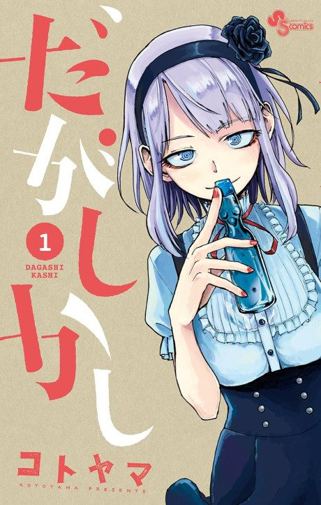

Dagashi Kashi
だがしかし
After the anime, read the manga from Chapter 127.
6.4AniList score
—Animeter, no votes yet
24episodes, 2 seasons
Rate it or report where you stopped
Anime finished. Where does the manga pick up?
Start at Chapter127
Season 1 covers chapters 1-56 and Season 2 covers chapters 57-126, so start at chapter 127. The manga finishes at chapter 186; Season 2 skips some small comedic skits.
156126186 end
Season 1Season 2Start reading here